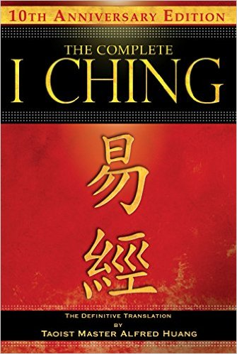
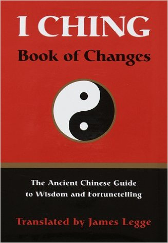
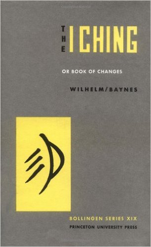
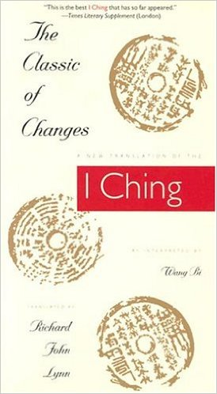
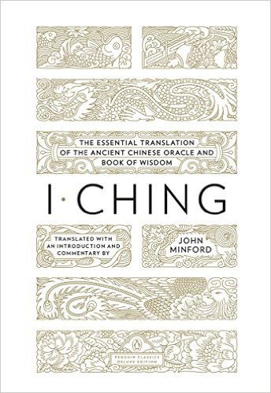
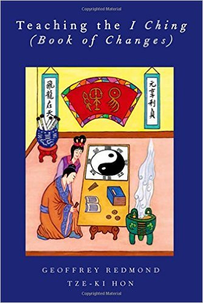
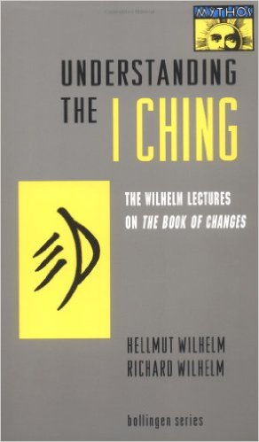
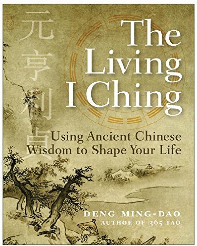
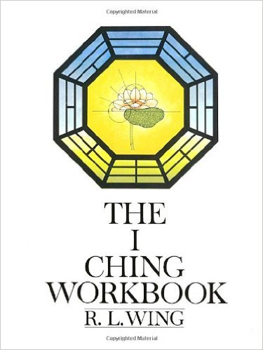
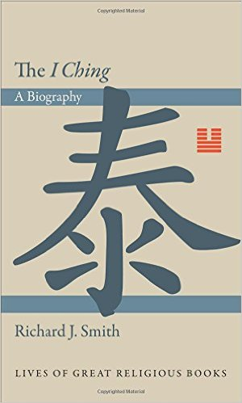

home
about
resources
Resources
Translations

(2010) Translated by Taoist Master Alfred Huang. Master Huang first translated the original ideograms of the I Ching into contemporary Chinese and then into English, bringing forth the intuitive meanings embodied in the text.

(1882) James Legge provided Westerners the first full length translation of the I Ching directly into English as part of Max Muller's 'Sacred Books of the East' series.

(1967) The Wilhelm-Baynes Translation is perhaps the most famous and influential, containg a foreword written by Carl Jung. It was first translated from Chinese to German, then from German to English (making it a 'translation of a translation'). It was popular in the 1960's among counter-culturists.

(2004) Richard John Lynn's translation is notable for its inclusion of Wang Bi's commentary. Wang Bi (226-249), a philosophy prodigy, thought that the book should not be read literally, but as an expression of abstract ideas.

(2014) Minford's translation is probably both the most recent and most bulky: it's a little over 900 pages in length. While it has been well-recieved, it is not generally considered a successor to the Wilhelm-Baynes translation.
Books on the I Ching

Tze-Ki Hon and Geoffrey Redmond

Place Name

Place Name

Place Name

2nd Row
Miscellaneous
Coins for I Ching divination for sale on Amazon
Phillip K. Dick interview where he discusses the I Ching
Bob Dylan interview where he discusses the I Ching (towards the end)
John Cage interview where he dicusses composing music using the I Ching
Excellent site for general information on I Ching/Yijing